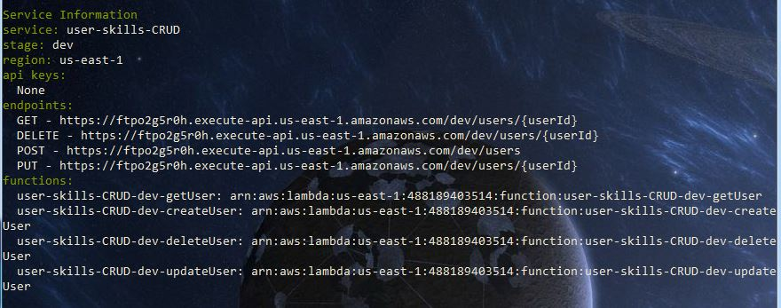

Creating a CRUD API with AWS lambda and dynamoDB
Intro
The last few lambda functions I have created have been very basic in nature as they returned simple responses with no error handling or other integrations needed.
So I thought I should try creating a slightly more complex CRUD API that links to a dynamoDB table to store a users information and skills.
To implement this I used the following:
- Serverless
- DynamoDb
- AWS Lambda
- Node 4.3.2
Creating the dynamoDB table
First up I needed to create a database for our api/functions to store the data in.
To provision the dynamoDb table I added the following into my serverless.yml file.
resources:
Resources:
usersTable:
Type: AWS::DynamoDB::Table
Properties:
TableName: user-skills-CRUD-usersTable-${opt:stage}
KeySchema:
- AttributeName: userId
KeyType: HASH
AttributeDefinitions:
- AttributeName: userId
AttributeType: S
ProvisionedThroughput:
ReadCapacityUnits: 1
WriteCapacityUnits: 1
DynamoDBIamPolicy:
Type: AWS::IAM::Policy
DependsOn: usersTable
Properties:
PolicyName: lambda-dynamodb
PolicyDocument:
Version: '2012-10-17'
Statement:
- Effect: Allow
Action:
- dynamodb:GetItem
- dynamodb:PutItem
- dynamodb:ListTables
- dynamodb:DeleteItem
- dynamodb:Query
- dynamodb:UpdateItem
Resource: arn:aws:dynamodb:*:*:table/user-skills-CRUD*
Roles:
- Ref: IamRoleLambdaExecution
This will create a table with the name "user-skills-CRUD-usersTable-${opt:stage}" where the "opt:stage" variable is replaced with the stage that I am deploying too. This allowed me to have different tables for each of my different environments.
The DynamoDBIamPolicy section is used by serverless to create a policy with the permissions defined and assigns it to the lambda functions. Without this the functions would not be able to access the table.
I also define the key of the table to be the userId which is a string as it will be a GUID.
Endpoints
Now that I have the database table setup and the permissions all ready to go it's now time to define the endpoints and the lambda functions that they will map to.
As part of this API I wanted to implement the following endpoints:
- (POST) /users - Create a user
- (PUT) /users/{userId} - Update the users details
- (DELETE) /users/{userId} - Delete the user
- (GET) /users/{userId} - Read the users details
To provision the endpoints in the gateway I added the following into my serverless.yml file
functions:
getUser:
handler: index.getUser
events:
- http:
path: users/{userId}
method: get
environment:
usersTableName: user-skills-CRUD-usersTable-${opt:stage}
deleteUser:
handler: index.deleteUser
events:
- http:
path: users/{userId}
method: delete
environment:
usersTableName: user-skills-CRUD-usersTable-${opt:stage}
createUser:
handler: index.createUser
events:
- http:
path: users
method: post
environment:
usersTableName: user-skills-CRUD-usersTable-${opt:stage}
updateUser:
handler: index.updateUser
events:
- http:
path: users/{userId}
method: put
environment:
usersTableName: user-skills-CRUD-usersTable-${opt:stage}
This will create the four endpoints and also inject the table name as an environment variable into the function. Unfortunately while serverless does offer a service wide environment variable I was unable to get this to work and was forced to repeat this in each individual function which makes it slightly less clean :(
The variable "{userId}" in the paths will be added to the event object that is passed into the lambda function. So can be accessed like "event.pathParameters.userId"
Functions
Now that everything is mapped it was time to actually start writing the code behind the functions.
To get started I wanted to wire up the database for local development. Locally I ran dynamoDB using docker the container can be found here
const AWS = require('aws-sdk');
let dynamoDb;
//Set dynamoDbEndpoint if it exists
if (process.env.dynamoDbEndpoint) {
console.log('*** Manually setting dynamoDb config');
dynamoDb = new AWS.DynamoDB({accessKeyId: 'headly48', secretAccessKey: '123', region: 'us-west-2', endpoint: new AWS.Endpoint(process.env.dynamoDbEndpoint)});
} else {
dynamoDb = new AWS.DynamoDB();
}
So in the index.js file I added the above code which creates a new dynamoDB with my local endpoint otherwise it defaults to using my AWS configured settings.
So if I want to call the createUser function against my local DB I ran the following in the command line
node -e 'process.env.dynamoDbEndpoint = "http://192.168.99.100:8000"; require("./index.js").createUser(}, null, function (blah, res) {console.log(res)})'
Now that's sorted I created a userService class which is responsible for making the calls to the database.
class UserService {
constructor (dynamoDb, tableName) {
this.dynamoDb = dynamoDb;
this.tableName = tableName;
}
}
And initialized it in the index.js by passing in the dbConnection and tableName
let userService = new UserService(dynamoDb, process.env.usersTableName);
Now I just needed to create the createUser function in my index.js.
This function first validates the users email is present and then makes a call to the userService which returns a promise. If the user has been successfully saved then it will return the userId in the body with a httpStatus of 201 else returns a 500.
module.exports.createUser = (event, context, callback) => {
let requestBody = JSON.parse(event.body);
if(!requestBody.email) {
return callback(null, {statusCode: 400, body: JSON.stringify({error: 'Please provide users email'})});
}
userService.createUser(requestBody).then(function (user) {
callback(null, {statusCode: 201, body: JSON.stringify(user)});
}).catch(function (error) {
console.log('Error creating user. ' + error);
callback(error);
});
};
Below is the createUser function in the userService. It generates a userId and creates the param to pass to dynamoDb and returns a promise.
createUser(userDetails) {
let userId = uuidGenerator.v4();
var params = {
TableName: this.tableName,
Item: {
userId: { S: userId},
email: {S: userDetails.email}
}
};
if (userDetails.skills) {
params.Item.skills = {SS: userDetails.skills}
}
return this.dynamoDb.putItem(params).promise().then(function (data) {
console.log('Created user ' + userId);
return {userId: userId};
});
}
Next the getUser function in the index.js.
module.exports.getUser = (event, context, callback) => {
if (!event.pathParameters.userId || !uuidvalidator(event.pathParameters.userId)) {
return callback(null, {statusCode: 400, body: JSON.stringify({error: 'UserId is invalid'})});
}
userService.getUser(event.pathParameters.userId).then(function (data) {
if (!data || Object.keys(data).length === 0) {
callback(null, {statusCode: 404, body: {message: 'User does not exist'}});
} else {
callback(null, {statusCode: 200, body: JSON.stringify(data)});
}
}).catch(function (error) {
callback(JSON.stringify({error: error}));
});
};
And the userService function it calls
getUser (userId) {
var params = {
TableName: this.tableName,
Key: { // a map of attribute name to AttributeValue for all primary key attributes
userId: { S: userId}
},
AttributesToGet: [
'userId',
'email',
'skills'
]
};
return this.dynamoDb.getItem(params).promise().then(function (data) {
let user = {};
user.userId = data.Item.userId.S;
user.skills = data.Item.skills.SS;
return user;
});
}
Next the updateUser function in the index.js
module.exports.updateUser = (event, context, callback) => {
if (!event.pathParameters.userId || !uuidvalidator(event.pathParameters.userId)) {
return callback(null, {statusCode: 400, body: JSON.stringify({error: 'UserId is invalid'})});
}
let requestBody = JSON.parse(event.body);
if(!requestBody.email) {
return callback(null, {statusCode: 400, body: JSON.stringify({error: 'Please provide users email'})});
}
userService.updateUser(event.pathParameters.userId, requestBody).then(function () {
callback(null, {statusCode: 204});
}).catch(function (error) {
console.log('Error creating user. ' + error);
callback(error);
});
};
And the function in the userService
updateUser (userId, userDetails) {
var params = {
TableName: this.tableName,
Key: { // a map of attribute name to AttributeValue for all primary key attributes
userId: { S: userId}
},
AttributeUpdates: {}
};
if (userDetails.email) {
params.AttributeUpdates.email = {
Action: 'PUT',
Value: {S: userDetails.email}
}
}
if (userDetails.skills) {
params.AttributeUpdates.skills = {
Action: 'PUT',
Value: {SS: userDetails.skills}
}
}
return this.dynamoDb.updateItem(params).promise();
}
Finally is the deleteUser function
module.exports.deleteUser = (event, context, callback) => {
let requestBody = JSON.parse(event.body);
if (!event.pathParameters.userId || !uuidvalidator(event.pathParameters.userId)) {
return callback(null, {statusCode: 400, body: JSON.stringify({error: 'UserId is invalid'})});
}
userService.deleteUser(event.pathParameters.userId).then(function () {
callback(null, {statusCode: 204});
}).catch(function (error) {
console.log('Error creating user. ' + error);
callback(error);
});
};
And the function in the userService
deleteUser(userId) {
var params = {
TableName: this.tableName,
Key: {
userId: { S: userId}
}
};
return this.dynamoDb.deleteItem(params).promise();
}
Deploying
Now for the fun part :D.
Deploying to AWS which is as simple as running the command serverless deploy --stage dev.

As I have used the stage var in the serverless.yml file I now have to include the stage manually which is a little annoying and it would be nice if serverless picked up the default opts.
Summary
It seemed fairly straightforward to get everything connected and working. It did take some time to workout the permissions that needed to be set and also setting environment variables/tableName was very fiddly and so ended up keeping it simple rather then constantly redeploying to see if changes to the service wide env variables fixed the issue of not being picked up correctly.
The postman collection to test the endpoints can be found here
To see the full code and more commands to run locally checkout my Github